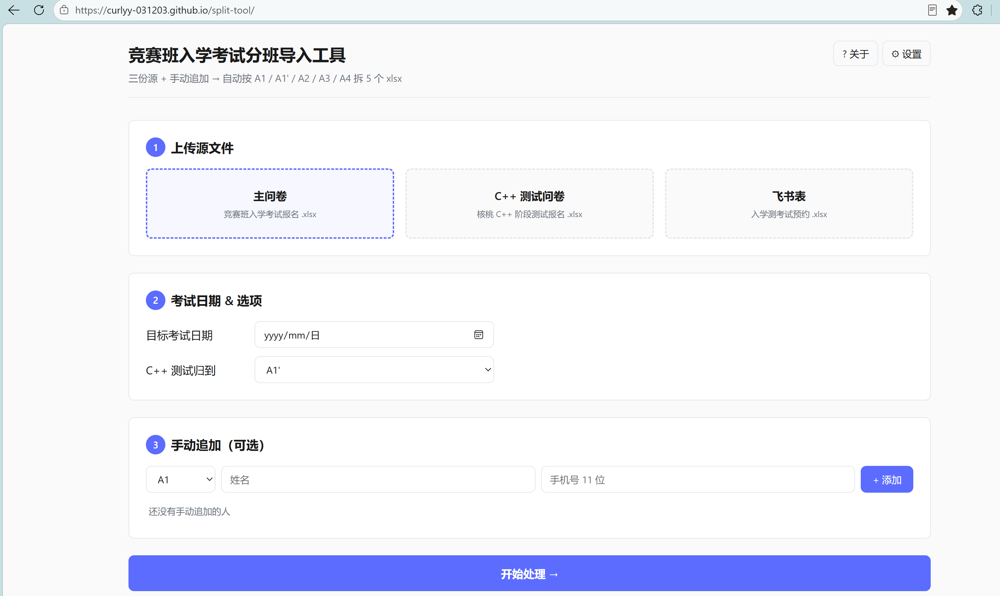

工具空壳已脱敏部署；生产环境数据不公开
Demo →
问题 / 洞察
在核桃编程负责学科运营期间，我每周需要为新学生安排 3 次入学测评，每次处理 100–150 名学生。学生数据分散在两个来源——家长填写的问卷、以及课导老师在飞书云文档中的私下预约名单——两份表格只含班级信息，与入学测系统按 5 种班型（A1 / A1' / A2 / A3 / A4）要求的导入模板并不匹配。运营需手动合并两份数据、按班型分拣、再套入系统模板，这个环节耗时、易错、易漏。
假设与决策
我判断这是一个高频、结构化、规则明确的重复劳动，适合用工具替代人工。关键决策是做成网页工具而非脚本或 Excel 公式——因为我希望它不只服务我自己，也能让不会写代码的同事和继任实习生直接在浏览器里上传文件就能用，零使用门槛。工具支持上传两个数据源，自动按 5 种班型拆分为 5 张符合系统模板的表格。
实现
基于 GitHub Pages 部署的纯前端工具，用户上传两份源表即可输出 5 张可直接导入的分班表。上线后曾遇到一个真实问题：飞书云文档导出的 Excel 与问卷平台导出的格式不一致（时间字段的表达方式不同），导致飞书数据无法被正确解析。我定位到差异后修复了解析逻辑，使工具能兼容多种数据源格式。
结果与反思
人工分拣单次约 30–40 分钟，使用工具后降至约 3 分钟，且上线后零差错。按每周 3 次计算，该工具每周节省约 1.5–2 小时的重复劳动。
~10×
单次提效（30–40 分钟 → 3 分钟）
1.5–2h
每周节省的重复劳动
0
上线后名单错误

[ assets/tool-1-split.png · 工具截图占位 ]